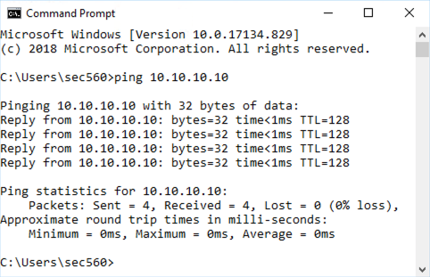

Lab 1.1: Setting Up the Virtual Machine Images
This document outlines the steps for setting up your Slingshot Linux and Windows 10 VMs and connecting them to the class network.
Objectives
- Extract the Slingshot and Windows VMs
- Configure VMware and connect VMs to the network
- VPN Connection - SANS OnDemand, vLive, or Simulcast Students Only!
- Confirm network connectiviy
Overview
SEC560 includes over 30 hands-on labs integrated into the course. Each lab teaches multiple lessons that are directly useful in conducting real-world penetration tests and Red Team engagements.
The course USB includes all the tools needed for every lab in the class. Many of the labs rely on the Slingshot Linux distribution and the Windows VM included on the course USB. This lab provides detailed information for networking the student’s Windows machine as well as the course Slingshot Linux image.
Virtual Machine Extraction and Configuration
The USB contains two Virtual Machines (VM), a Windows 10 VM, and a Linux VM (Slingshot). Both of these VMs will be used every day in this class, so getting them networked is important. For students in the live classroom environment, you’ll need to connect to an Ethernet switch in the classroom. For students taking the class via SANS OnDemand, vLive, or Simulcast, you’ll need to set up a VPN connection from your Windows and Slingshot Linux systems to access the targets.
The VMs will take up approximately 50GB of space on your hard drive when extracted.
- Open VMware Fusion, VMware Workstation, or VMware Workstation Player.
- Click on File.
- Click on Import or Open Virtual Machine (depending on your VMware product).
- Find the .ova file for Slingshot on the USB and open the VM.
If VMware prompts you about whether you "moved" or "copied" this virtual machine; select "I copied it." If it doesn’t prompt you, that’s okay.
- Repeat the above stops for the Windows .ova file.
Credentials
The default credentials for both the Windows and Slingshot VMs are the same:
- Username:
sec560 - Password:
sec560
Change the password for this account to a value you'll remember but that isn't easily guessed or cracked. We'll be connected to a network with other students in this course, and you do not want them to know the password for your Linux or Windows image.
Linux
Change the password for the
sec560user using thepasswdcommand:$ passwd
Enter your chosen password once and then again to set it.
Open a terminal window and become root:
$ sudo su -
Change the password for
root:# passwd
Windows
Click the menu in VMware and select VM | Send Ctrl+Alt+Del.
Click "Change a password".
Change the password for the
sec560user. First, enter the original password ofsec560. Then enter your chosen password twice.
Network Configuration
For most of the exercises in SEC560, your VMs will be configured to use VMware's Bridged network setting. This allows you to connect to the Windows VM and the target systems.
Bridged Mode vs Host-only Mode
We will use Bridged mode for most exercises as well as the entire capstone CTF. Use Bridged mode unless otherwise instructed. The instructions below describe how to configure your VM for Bridged mode. If you have been instructed to use Host-only mode, follow the same instructions except select Host-only instead of Bridged.
Host OS and VMware version
The method to change networking modes depends on your host operating system. The steps in this lab cover the configuration needed to connect Slingshot Linux and Windows 10 to the network. You can skip to the pertinent configuration section by clicking one of the links below. Refer to the example below that matches your operating system environment.
- VMware Fusion (macOS)
- VMware Workstation
- VMware Workstation Player
- SANS OnDemand, vLive, or Simulcast Students Only
Special Note for Remote Students (SANS OnDemand, vLive, or Simulcast Students)
If you are taking this course remotely via the SANS OnDemand, vLive, or Simulcast, you will receive an email from SANS Virtual Lab Support that describes in detail the process for configuring your system to use OpenVPN. The email will explain various steps, including:
You’ll need to set up your Slingshot Linux virtual machine and Windows VM so that they both can access the internet. Both machines must be able to reach an internet destination such as www.sans.org.
In VMware, please use bridged networking (see the steps below to configure this setting).
OpenVPN is already installed in both Windows and Slingshot. You do not need to download and install it.
Download the OpenVPN certificates, as described in the email from the SANS Virtual Lab Support. Your OpenVPN key (.ovpn file) will have a filename that is unique to your SANS account.
In Windows, put your certificates in the C:\Program Files\OpenVPN\config directory and start OpenVPN with Administrator privileges.
In Slingshot Linux, place your downloaded certificates in the /etc/openvpn directory.
Establish an OpenVPN connection from Windows by right-clicking the OpenVPN icon in your tool tray and selecting Connect. When prompted, enter VpnPassword (case-sensitive) as the password.
Establish the VPN connection in Slingshot Linux by running:
# openvpn --config /etc/openvpn/sec560a-[HyphenatedDigits].ovpn
Enter VpnPassword (case-sensitive) as the password when prompted.
- When both Windows and Slingshot Linux can ping 10.10.10.10, they are configured properly for the lab exercises.
Note: For lab exercises that access the 10.10.10.0/24 virtual network through OpenVPN, you will use the tap0 network adapter, which will have a 10.10.76.X IP address. For all networked labs, please use the IP address assigned to this interface by the DHCP server (10.10.76.X) across the VPN in the virtual lab. This IP address is viewable via the OpenVPN tool tray client in Windows and as the tap0 network interface displayed by the ifconfig tap0 command in Slingshot Linux. This address will not be updated properly on the desktop of the VMs.
IMPORTANT NOTE: For all labs that use the tcpdump sniffer, specify the tap0 network interface at the command line using the -i option as follows:
# tcpdump --i tap0 -nn
When replacing [YourLinuxIPaddr] in exercises that use Metasploit, use your tap0 10.10.76.X IP address.
VMware Configuration
macOS VMware Fusion - Configuring Bridged Networking
To configure bridged networking in macOS VMware Fusion, complete the following steps.
Select the Slingshot VM (click anywhere inside the VM).
Next, click Virtual Machine | Network Adapter | Network Adapter Settings...), as shown below.
Mace sure that "Connect Network Adapter" is checked.
Near the middle-left part of your screen, in the section under "Bridged Networking", click the radio button corresponding to your Ethernet adapter.
Perform the same steps again but in Step 1, use your Windows 10 VM instead.
VMware Workstation - Configuring Bridged Networking
Note: This section describes the configuration for Workstation, which is a paid product. This section does not describe configuration settings for the free Workstation Player tool. Follow the link to go to configuration settings for Workstation Player.
To configure bridged networking in VMware Workstation, complete the following steps. If you are using Linux as your host OS, you may have to run VMware Workstation as root to complete the steps below.
Next, click Edit | Virtual Network Editor, as shown below.
Click on the "Change Settings" button (bottom right). A UAC dialog box may prompt you to accept the change. Click "Yes" to do so.
Make sure that your VMnet0 interface is highlighted at the top of the screen. Near the center of the screen, make sure that the radio button is set for "Bridged", and click on the dropdown menu where it says "Automatic" and change it to choose your Ethernet interface. Different computers will have different names for the Ethernet interface, so select the one that most likely matches your Ethernet interface. In particular, for in-classroom SANS training where there is a live Ethernet network, do not select the wireless interface.
Click on "Apply" and then on "OK" to close the configuration screen.
Select the Slingshot VM (click anywhere inside the VM).
Click on VM | Removable Devices | Network Adapter | Settings...
Click on the "Network Adapter" and then click on "Bridged" and check the box next to "Replicate physical network connection state".
Perform Steps 6 and 7 again, but select the Windows 10 VM first instead.
VMware Workstation Player - Configuring Bridged Networking
To configure bridged networking in Windows VMware Workstation Player (not VMware Workstation; see the prior section for those directions), select the Slingshot Linux VM (click anywhere inside the VM).
To configure bridged networking in VMware Workstation Player, complete the following steps. If you are using Linux as your host OS, you may have to run VMware Workstation as root to complete the steps below.
Select the Slingshot VM (click anywhere inside the VM).
Click Player | Manage | Virtual Machine Settings.
Click on the following: A. Select "Network Adapter" near the middle of the screen. B. Make sure that "Connected" and "Connect at power on" are selected. C. Make sure the radio button for "Bridged" is selected and that the "Replicate physical network connection state" is checked. D. Click on the "Configure Adapters" button.
Deselect all network adapters except your Ethernet interface. Make sure that only your Ethernet adapter is checked and that all other interfaces are unchecked. Different computers will have different names for the Ethernet interface, so select the one that most likely matches your Ethernet interface. In particular, your wireless adapter should be deselected, as well as all other interfaces, to force VMware to use your Ethernet adapter.
Perform these steps again, but select the Windows 10 VM first instead.
Confirm Network Connectivity
Windows
Open a command prompt and ping 10.10.10.10.

If the command is unsuccessful, ensure your network interface is properly configured.
Confirm the firewall is disabled by running the following below, making sure all the output lines say OFF:
C:> netsh advfirewall show allprofiles | find /i "state" State OFF State OFF State OFF
if the firewall is not off!
- Launch an elevated prompt. To do this, click on the "Command Prompt - Run as Administrator" icon on the desktop. Note: The icon text may be truncated.
- Type the command below to disable the firewall:
C:> netsh advfirewall set allprofiles state off
- Confirm the firewall is indeed off by running the command:
netsh advfirewall show allprofiles | find /i "state"
Linux
Open the Mate Terminal and ping 10.10.10.10.
If the command is unsuccessful, ensure your network interface is properly configured.
To terminate the command, press CTRL+c.
Confirm Connectivity between your VMs
Find your Linux IP address by running
ifconfig eth0from the terminal.In Windows, ping your Linux IP address.
Find your Windows IP address by running
ipconfigfrom the command prompt.Ping your Linux IP address.
Conclusion
In this lab, we’ve seen how to extract and configure the Slingshot Linux and Windows 10 image for the 560 course. These images include all of the tools we’ll be using for the class.
- Linux - The tools needed for the class are installed in the
/optdirectory. - Windows - The tools needed for the class are installed in the
C:\toolsdirectory. There is a link to this directory on the desktop.
This completes the configuration of your Windows 10 VM and your Slingshot Linux VM for access to networked resources.